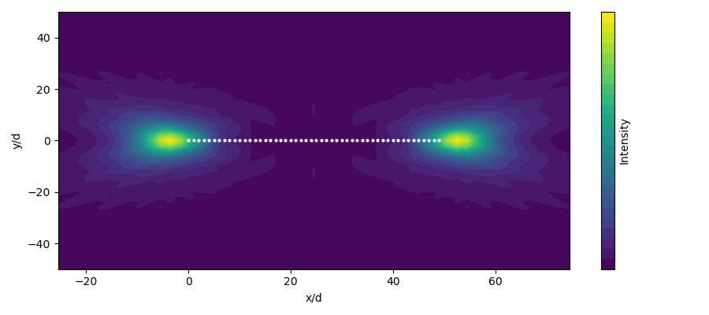

Reduced Spin
A common approach to treating many spins quantum mechanically is to truncate the Hilbert space at a specific number of excitations. This widely reduces the number of possible states. CollectiveSpins.jl offers generic functionality to truncate a system of spins at an arbitrary number of excitations. The following functions can be used, and are largely equivalent to the SpinBasis implemented in QuantumOptics.jl.
ReducedSpinBasisreducedspintransitionreducedsigmapreducedsigmamreducedsigmaxreducedsigmayreducedsigmazreducedsigmapsigmamreducedspinstate
Example
Let us illustrate how to work with the reducedspin submodule. In the following example, we will compute the intensity radiation pattern of a regular chain of atoms in a subradiant state from A. Asenjo-Garcia et al, 10.1103/PhysRevX.7.031024 (Fig. 3b).
using CollectiveSpins
using QuantumOptics
using PyPlot
# Parameters
N = 50
M = 1 # Number of excitations
d = 0.33
pos = geometry.chain(d,N)
μ = [[1.0,0,0] for i=1:N]
S = SpinCollection(pos,μ)
# Collective effects
Ωmat = OmegaMatrix(S)
Γmat = GammaMatrix(S)
# Hilbert space
b = ReducedSpinBasis(N,M,M) # Basis from M excitations up to M excitations
# Effective Hamiltonian
spsm = [reducedsigmapsigmam(b, i, j) for i=1:N, j=1:N]
H_eff = dense(sum((Ωmat[i,j] - 0.5im*Γmat[i,j])*spsm[i, j] for i=1:N, j=1:N))
# Find the most subradiant eigenstate
λ, states = eigenstates(H_eff; warning=false)
γ = -2 .* imag.(λ)
s_ind = findmin(γ)[2]
ψ = states[s_ind]
# Compute the radiation pattern
function G(r,i,j) # Green's Tensor overlap
G_i = GreenTensor(r-pos[i])
G_j = GreenTensor(r-pos[j])
return μ[i]' * (G_i'*G_j) * μ[j]
end
function intensity(r) # The intensity ⟨E⁻(r)⋅E⁺(r)⟩
real(sum(expect(spsm[i,j], ψ)*G(r,i,j) for i=1:N, j=1:N))
end
y = -50d:2d:50d
z = 5d
x = y .+ 0.5d*(N-1)
I = zeros(length(x), length(y))
for i=1:length(x), j=1:length(y)
I[i,j] = intensity([x[i],y[j],z])
end
# Plot
figure(figsize=(9,4))
contourf(x./d,y./d,I',30)
for p in pos
plot(p[1]./d,p[2],"o",color="w",ms=2)
end
xlabel("x/d")
ylabel("y/d")
colorbar(label="Intensity",ticks=[])
tight_layout()